Class 11 · Chemistry
UNIT 2 : STRUCTURE OF ATOM
SUBATOMIC PARTICLES: e⁻, p⁺, n
1Definition & Introduction
- Subatomic particles are constituents of atoms: electron, proton, neutron.
- Dalton treated atoms as indivisible; electrical phenomena required internal charged particles.
- Electrons were identified from cathode rays (J.J. Thomson, 1897) as universal negative particles.
- Positive particles were observed as canal rays (Goldstein) moving opposite to cathode rays.
- Neutrons (Chadwick, 1932) explained nuclear mass without extra positive charge.
2 Diagram
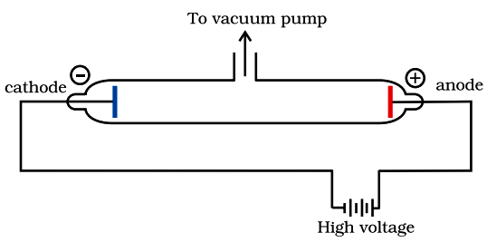
Cathode rays travel cathode → anode; ZnS screen glows; deflection shows rays carry negative charge
3Key Concepts
- 🧪Cathode rays: stream from cathode (−) to anode (+); deflect to + plate ⇒ negatively charged.
- 🌍Electron is universal: cathode-ray properties independent of gas and electrode material.
- 🧲Thomson measured e/m of electron using combined electric and magnetic deflection.
- 🪙Millikan showed charge is quantised: observed charges are integral multiples of the elementary charge magnitude e.
- ➡️Canal rays: positive ions pass through perforated cathode; e/m depends on gas used.
- 🎯Chadwick: α-particles bombard Be ⇒ neutrons (neutral) with mass slightly greater than proton.
4DISCOVERY TIMELINE (WHAT TO REMEMBER)
- Dalton (1808): atom indivisible; failed to explain charging by friction.
- Thomson (1897): cathode rays ⇒ electrons; measured e/m.
- Millikan (1906–14): oil drop ⇒ charge on electron; charge is quantised.
- Goldstein: canal rays ⇒ positive ions; depend on gas; not universal like electrons.
- Proton (1919): lightest positive particle from hydrogen; charge +e.
5IMPLICATIONS: CHARGE, MASS & ATOMIC DIVISIBILITY
- Atom is divisible: contains smaller charged particles (e⁻, p⁺) and neutral n.
- Electron mass is tiny; most atomic mass lies in nucleus (p⁺ + n).
- Neutral atom condition: number of e⁻ = number of p⁺.
- Canal rays are ions: their mass and e/m vary with gas; electron does not.
- Quantisation: observed charge magnitude occurs as q = ne (n is an integer); sign depends on whether charge is positive or negative.
6ELECTRON vs PROTON vs NEUTRON (CHARGE & MASS)
| Basis | Electron (e⁻) | Proton (p⁺) | Neutron (n) |
|---|---|---|---|
| Charge | −1.602176×10−19 C (−1) | +1.602176×10−19 C (+1) | 0 |
| Mass (kg) | 9.109382×10−31 | 1.672622×10−27 | 1.674927×10−27 |
| Mass (u) | 0.00054 | 1.00727 | 1.00867 |
| Where in atom | Outside nucleus | Nucleus | Nucleus |
| How discovered | Cathode rays (J.J. Thomson, 1897) | Positive rays/canal rays observed (Goldstein); proton identified as H+ from hydrogen (Rutherford, 1919) | Bombardment of Be with α-particles → neutral radiation (James Chadwick, 1932) |
7Solved Q&A
1
Why did cathode-ray experiments directly contradict Dalton’s indivisible atom model?
Answer:
Dalton assumed atom is the smallest particle with no internal parts.
Cathode rays behaved as particles: they travel straight and create fluorescence on ZnS.
They deflect towards the positive plate in an electric field ⇒ they carry negative charge.
Since these negative particles come from all gases/electrodes, they must be constituents of atoms.
Therefore atoms must contain smaller particles (electrons) ⇒ atom is divisible.
Dalton assumed atom is the smallest particle with no internal parts.
Cathode rays behaved as particles: they travel straight and create fluorescence on ZnS.
They deflect towards the positive plate in an electric field ⇒ they carry negative charge.
Since these negative particles come from all gases/electrodes, they must be constituents of atoms.
Therefore atoms must contain smaller particles (electrons) ⇒ atom is divisible.
✓ Cathode rays proved existence of universal negatively charged particles
(electrons) inside atoms, so atoms are divisible.
2
A discharge tube shows canal rays. A student claims they are protons in all gases.
Is the claim correct? Explain.
Answer:
Canal rays are positive ions formed from the gas present in the tube.
Their mass and e/m vary with the nature of the gas, unlike electrons.
Only when the gas is hydrogen, the lightest positive ion is H+, identified with the proton.
With other gases, canal rays are heavier cations (e.g., Ne+, Ar+), not protons.
Canal rays are positive ions formed from the gas present in the tube.
Their mass and e/m vary with the nature of the gas, unlike electrons.
Only when the gas is hydrogen, the lightest positive ion is H+, identified with the proton.
With other gases, canal rays are heavier cations (e.g., Ne+, Ar+), not protons.
✓ Incorrect; canal rays are gas-dependent positive ions. Only in hydrogen do
canal rays correspond to protons (H+).
8⭐Important Points
- Cathode rays deflect towards + plate ⇒ electron is negatively charged.
- Electron properties are independent of gas/electrodes ⇒ electron is a universal constituent.
- Thomson determined e/m for electron; Millikan determined e and showed charge quantisation.
- Canal rays move opposite to cathode rays; their e/m depends on gas (ions).
- Neutron has zero charge but mass ~1 u; explains extra nuclear mass beyond protons.
9❌Common Mistakes
- Saying cathode rays are light/photons; they are streams of electrons.
- Forgetting sign of electron charge; writing electron charge as +1.6×10−19 C.
- Assuming canal rays are always protons; they are positive ions of the gas used.
- Mixing “charge on electron” with “e/m of electron” (different experiments).
10💡Memory Technique
“Mnemonic: CAT vs CAN”
DISCOVERY OF ELECTRON (CATHODE RAYS)
1Definition & Introduction
- Electron was identified as the particle constituting cathode rays in a discharge tube at low gas pressure.
- A cathode ray discharge tube is a sealed glass tube with electrodes, evacuated to very low pressure, and high voltage applied.
- Cathode rays travel from cathode (−) to anode (+) and produce fluorescence on a ZnS screen.
- Deflection by electric and magnetic fields shows cathode rays carry negative charge.
- Independence from electrode material and gas proves electrons are universal constituents of all atoms.
2 Diagram
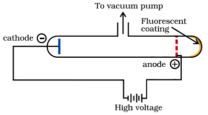
Cathode rays: from cathode (−) to anode (+), pass through perforated anode, produce glow on ZnS screen.
3Key Concepts
- ⚡Low pressure gas + high voltage ionises gas; a stream of particles originates from the cathode.
- ➡️In absence of fields, cathode rays travel in straight lines (shadow formation possible).
- 🟩A ZnS fluorescent screen glows where cathode rays strike, revealing their path.
- 🕳️Perforated anode lets rays pass through; glow behind anode confirms a particle beam passes through the hole.
- 🧲Magnetic field deflects the beam, showing it contains charged particles (neutral rays would not deflect).
- ➕Electric field deflects beam towards the positive plate ⇒ particles are negatively charged.
4APPARATUS & SETUP (WHAT TO DRAW IN EXAM)
- Glass tube with very low pressure gas (nearly evacuated).
- Two electrodes sealed inside: cathode (−) and anode (+).
- Apply very high voltage across electrodes.
- Perforated anode (with hole) to let the beam continue forward.
- Behind anode: ZnS-coated screen to show a fluorescent spot.
5OBSERVATIONS → INFERENCES (WHY IT PROVES ELECTRON)
- Glow spot on ZnS appears behind anode ⇒ particles pass through the hole and strike the screen.
- Straight-line travel in no field ⇒ ray path is well-defined; a shadow can be formed.
- Beam deflects towards positive plate in electric field ⇒ particles are negatively charged.
- Beam deflects in magnetic field ⇒ beam is charged (neutral radiations do not deflect).
- Same properties for different gases/electrodes ⇒ electron is universal in all atoms.
6CATHODE RAYS: ELECTRIC VS MAGNETIC FIELD TEST
| Basis | Electric field | Magnetic field |
|---|---|---|
| What is applied | Two charged plates create E across beam | Magnet/coils create B across beam |
| Key observation | Beam bends towards + plate | Beam bends sideways; direction depends on B (and beam direction) |
| Main conclusion | Particles carry negative charge | Beam consists of charged particles in motion (neutral rays do not deflect) |
| Exam use | Identifies sign of charge | Confirms the beam is charged; helps distinguish from neutral radiation |
7Solved Q&A
1
In a discharge tube, the beam deflects towards the plate connected to the positive
terminal. What does this prove, and what is the beam called?
Answer:
A beam attracted towards the positive plate must carry negative charge (unlike charges attract).
In a low-pressure discharge tube, this negatively charged beam from cathode to anode is called cathode rays.
A beam attracted towards the positive plate must carry negative charge (unlike charges attract).
In a low-pressure discharge tube, this negatively charged beam from cathode to anode is called cathode rays.
✓ It proves the beam is negatively charged; it is the cathode ray beam
(electron stream).
2
Why did cathode rays establish that electrons are a universal constituent of matter?
Answer:
Cathode ray behaviour (straight-line travel, fluorescence, deflection by fields) is observed regardless of the gas present at low pressure.
The same behaviour is also observed for different electrode materials.
So the particle cannot be specific to a particular gas or metal; it must be present in all atoms.
Cathode ray behaviour (straight-line travel, fluorescence, deflection by fields) is observed regardless of the gas present at low pressure.
The same behaviour is also observed for different electrode materials.
So the particle cannot be specific to a particular gas or metal; it must be present in all atoms.
✓ Because cathode ray properties are independent of the gas and electrode
material, the particle (electron) is a universal constituent of atoms.
8⭐Important Points
- Low pressure + high voltage produces cathode rays from cathode (−) to anode (+).
- A perforated anode and ZnS screen together demonstrate that the beam passes through and strikes the screen (fluorescence).
- No field: rays move in a straight line; with fields: the path bends.
- Electric field deflection towards + plate is direct evidence for negative charge.
- Independence from gas/electrode material supports universality of the electron and divisibility of the atom.
9❌Common Mistakes
- Saying cathode rays are light waves; they are streams of particles (electrons).
- Mixing direction: cathode rays go from cathode to anode, not anode to cathode.
- Forgetting that deflection towards + plate means the rays are negative.
- Claiming cathode rays depend on the gas; canal rays depend on gas, not cathode rays.
10💡Memory Technique
“Mnemonic: "C-A-Z-S" = Core drawing + core conclusions”
J.J. Thomson (1897): charge-to-mass ratio of electron using crossed electric and magnetic fields
ELECTRON e/m RATIO
1Definition & Introduction
- Electron e/m ratio is the magnitude of charge of electron divided by its mass.
- Measured first for cathode-ray particles by J.J. Thomson in 1897 using deflection in electric and magnetic fields.
- Unit: C kg−1.
- Experimental value: e/me = 1.758820 × 1011 C kg−1.
- Independent of nature of gas in discharge tube and electrode material → electrons are universal constituents of atoms.
2Diagram
Crossed fields (E ⟂ B ⟂ beam) enable speed measurement and hence e/m.
3Key Concepts
- 🧪Cathode rays: stream of negatively charged particles from cathode (−) to anode (+) at low gas pressure.
- 🧭Electric field deflects beam toward + plate → particles carry negative charge.
- 🧲Magnetic field bends moving charges; direction depends on sign of charge.
- ⚖In crossed fields, zero net deflection gives speed: v = E/B.
- 🌀With only magnetic field, circular path radius relates momentum: r = mveB.
- 📌Combining measurements yields e/m without needing separate values of e or m.
4WORKING (THOMSON METHOD: CROSSED FIELDS)
- Cathode rays are accelerated by high potential in a low-pressure discharge tube.
- Apply electric field between parallel plates → beam deflects due to electrostatic force.
- Apply magnetic field perpendicular to beam; magnetic force bends path in opposite sense to electric deflection.
- Adjust fields so beam is undeflected: electric and magnetic forces balance → gives electron speed.
- Then use magnetic deflection (radius of curvature) to connect speed with e/m.
5SIGNIFICANCE + LINK TO e AND m
- Same e/m obtained regardless of gas/electrodes → electron is a fundamental particle present in all atoms.
- Since e/m is large, electron has very small mass compared to typical ions.
- Combining Thomson’s e/m with Millikan’s e gives electron mass: me = e(e/m).
- Standard values: e = 1.602176 × 10−19 C (magnitude), me = 9.1094 × 10−31 kg.
6Formulas
Force balance for zero deflection in crossed fields
eE = evB
Speed of electrons
v = EB
Magnetic field only: circular motion condition
evB = mv2r
Relating radius to momentum
r = mveB
Combine with v = E/B to get e/m
em = EB2r
| e = | magnitude of electron charge (C) |
| m = | electron mass (kg) |
| E = | electric field strength between plates (V m−1 or N C−1) |
| B = | magnetic flux density (tesla, T) |
| v = | speed of electrons (m s−1) |
| r = | radius of circular path in magnetic field (m) |
Most important result (Thomson method)
em = EB2r = 1.758820 × 1011 C kg−1
7Solved Examples
1
In a Thomson-type setup, the electron beam is undeflected when E = 2.0 × 104 V m−1 and B = 2.0 × 10−3 T. With magnetic field only (same B), the beam follows a circular arc of radius r = 0.30 m. Find e/m.
Solution:
Zero deflection ⇒ v = EB = 2.0 × 1042.0 × 10−3 = 1.0 × 107 m s−1.
Magnetic circle ⇒ em = vBr (from r = mveB).
Substitute: em = 1.0 × 107(2.0 × 10−3)(0.30) = 1.0 × 1076.0 × 10−4 = 1.67 × 1010 C kg−1.
Zero deflection ⇒ v = EB = 2.0 × 1042.0 × 10−3 = 1.0 × 107 m s−1.
Magnetic circle ⇒ em = vBr (from r = mveB).
Substitute: em = 1.0 × 107(2.0 × 10−3)(0.30) = 1.0 × 1076.0 × 10−4 = 1.67 × 1010 C kg−1.
✓ em = 1.67 × 1010 C kg−1
8⭐Important Points
- Thomson’s experiment gives e/m (not e and m separately).
- Value to remember: e/me = 1.758820 × 1011 C kg−1.
- Cathode rays deflect toward + plate ⇒ electron is negatively charged.
- e/m does not depend on the gas or electrode material ⇒ electron is common to all atoms.
- Using Millikan’s charge, electron mass is obtained: me = e(e/m).
9❌Common Mistakes
- Using signed charge (−e) in formulas; for e/m ratio usually magnitude is reported.
- Forgetting the crossed-field condition for zero deflection: v = E/B (not B/E).
- Mixing up the expressions em = vBr and me = Brv.
- Wrong units for E (using V instead of V m−1) or for B (not using tesla).
10💡Memory Technique
“Mnemonic: 'E-B-R gives e/m'”
11🧮Formula Sheet
em (electron) = 1.758820 × 1011 C kg−1Crossed fields (no deflection): eE = evB ⇒ v = EBMagnetic circle: evB = mv2rr = mveB ⇒ em = vBrCombined Thomson result: em = EB2rMillikan charge magnitude: e = 1.602176 × 10−19 CElectron mass from both: me = e(e/m) = 9.1094 × 10−31 kg
Force balance on a tiny charged oil drop ⇒ q = ne and precise
electron charge
MILLIKAN OIL DROP EXPERIMENT
1Definition & Introduction
- Millikan measured charge on individual oil drops suspended between charged plates to obtain electron charge (magnitude).
- Oil mist is produced by an atomiser; droplets enter a chamber through a small hole in the upper plate.
- Air is ionised by X-rays; droplets gain/lose electrons by collisions with ions, so the drop charge can change in discrete steps during observation.
- Drop motion is observed using a telescope with micrometer; terminal speeds are measured accurately.
- Charges found are always integral multiples: q = ne → quantisation of charge.
2 Diagram
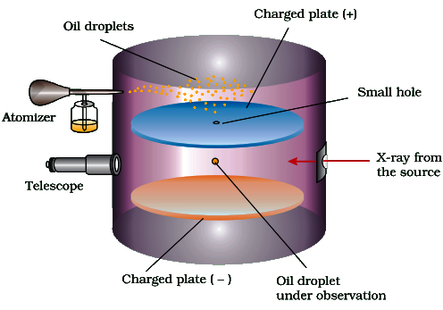
Oil drop between parallel plates; adjust V until terminal speeds allow force
balance.
3Key Concepts
- 🧲Electric field between plates: E = V/d, force magnitude on drop = qE.
- ⬇️Effective weight (weight − buoyancy): Weff = 43πr3(ρoil−ρair)g.
- 🌬️Viscous drag (Stokes): Fd = 6πηrv (valid at low Reynolds number).
- ⏱️At terminal speed, acceleration is zero; use vf (field off, falling) and vr (field on, rising).
- 🔢From many drops, the smallest common charge increment gives e = 1.602176 × 10−19 C (magnitude). Electron charge is −e.
- ⚛️Combine with Thomson: me = e ÷ (e/me) ≈ 9.1094 × 10−31 kg.
4SETUP & OBSERVATIONS (WHAT YOU MEASURE)
- With field OFF: drop falls at terminal speed vf (effective weight balanced by drag).
- With field ON: tune V so drop rises at terminal speed vr (electric force upward; drag downward).
- Use a fixed distance s on the microscope scale: v = s/t from measured time.
- Choose non-volatile oil so radius stays nearly constant during observation.
5WHY QUANTISATION EMERGES
- A drop’s charge changes only when it gains/loses whole electrons via ion collisions.
- Measured charges cluster at values: q1, q2, … with a common smallest step.
- That smallest step equals the fundamental charge magnitude e; hence q = ne.
- Finally combine e with Thomson’s e/m to obtain me.
6Formulas
Terminal fall (field OFF): drag balances effective weight
43πr3(ρoil−ρair)g
= 6πηrvf
Solve for drop radius
r = √(9ηvf2(ρoil−ρair)g)
Terminal rise (field ON, rising): upward electric force balances downward effective
weight + drag
qE = 43πr3(ρoil−ρair)g
+ 6πηrvr
Eliminate weight term using fall condition ⇒ charge in terms of measurable speeds
q = 6πηr(vf+vr)E
= 6πηr(vf+vr)dV
Quantisation conclusion from many drops
q = ne, n = 1,2,3…
| r = | Radius of oil drop (m) |
| η = | Viscosity of air (Pa·s) |
| ρoil, ρair = | Densities of oil and air (kg m−3) |
| vf, vr = | Terminal speeds in fall (field off) and rise (field on) (m s−1) |
| E = | Electric field between plates (N C−1 or V m−1) |
| V, d = | Potential difference and plate separation (V, m) |
| q = | Charge magnitude on the drop (C) |
| e = | Magnitude of electron charge = 1.602176 × 10−19 C (electron has charge −e) |
Working formula used to compute drop charge magnitude
q = 6πηr(vf+vr)E
= 6πηr(vf+vr)dV
7Graph
Plot of measured q values vs integer n gives a straight line with
slope e.
8Solved Examples
1
A drop has measured charge magnitude q = 4.806528 × 10−19 C.
Using e = 1.602176 × 10−19 C, find n in q = ne.
Solution:
n = qe = 4.806528 × 10−191.602176 × 10−19
10−19 cancels ⇒ n = 4.8065281.602176 = 3.000000
n = qe = 4.806528 × 10−191.602176 × 10−19
10−19 cancels ⇒ n = 4.8065281.602176 = 3.000000
✓ n = 3, so the drop carries charge magnitude q = 3e.
2
Using Thomson’s value e/me = 1.758820 × 1011 C
kg−1 and Millikan’s e = 1.602176 × 10−19 C (magnitude), calculate
electron mass me.
Solution:
me = e(e/me) = 1.602176 × 10−191.758820 × 1011 kg
Powers: 10−19/1011 = 10−30
Numeric part: 1.6021761.758820 ≈ 0.91094
So me ≈ 0.91094 × 10−30 kg = 9.1094 × 10−31 kg
me = e(e/me) = 1.602176 × 10−191.758820 × 1011 kg
Powers: 10−19/1011 = 10−30
Numeric part: 1.6021761.758820 ≈ 0.91094
So me ≈ 0.91094 × 10−30 kg = 9.1094 × 10−31 kg
✓ me ≈ 9.1094 × 10−31 kg.
9⭐Important Points
- Key idea: use terminal motion so acceleration is zero and force balance is valid.
- Must include buoyancy: use (ρoil−ρair) in effective weight.
- E between plates is taken approximately uniform: E = V/d (parallel plates; edge effects neglected).
- Quantisation result: all measured charges fit q = ne; smallest step gives e (magnitude).
- Standard values: e = 1.602176 × 10−19 C (electron charge = −e); me ≈ 9.1094 × 10−31 kg.
10❌Common Mistakes
- Forgetting buoyant correction and using ρoil instead of (ρoil−ρair).
- Using qE = Weff even when the drop is rising; missing the drag term with vr.
- Mixing sign of charge with magnitude; many problems compute magnitude q and infer sign separately.
- Using E incorrectly (taking E = d/V instead of V/d).
11💡Memory Technique
“OFF–DOWN, ON–UP, ADD the speeds”
12🧮Formula Sheet
E = V/dFdrag = 6πηrvWeff = 43πr3(ρoil−ρair)gr = √(9ηvf2(ρoil−ρair)g)q = 6πηr(vf+vr)E
= 6πηr(vf+vr)dVq = ne, n = 1,2,3… (quantisation); e = 1.602176 ×
10−19 C (magnitude)me = e(e/me) ≈ 9.1094 ×
10−31 kg (using Thomson e/me)
Thomson’s plum pudding → Rutherford’s nucleus (via α-scattering)
ATOMIC MODELS BASICS
1Definition & Introduction
- Atomic model = a simplified picture to explain how charge and mass are arranged inside an atom.
- Thomson (1898): atom is a uniform +ve sphere with electrons embedded → overall neutral.
- Rutherford (1909–11): α-particle scattering showed +ve charge and mass are in a tiny nucleus.
- Key idea from scattering: most of the atom is empty space because most α pass straight through.
- Size scale: rnucleus ≈ 10−15 m vs ratom ≈ 10−10 m so ratom/rnucleus ≈ 105.
2 Diagram
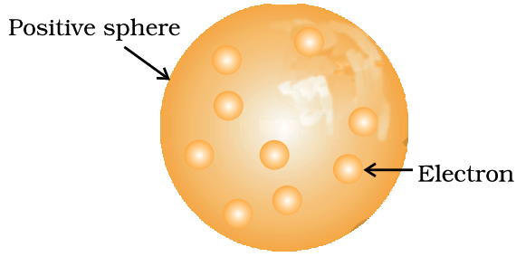
Left: Thomson’s embedded-electron model; Right: Rutherford set-up and typical α
paths (mostly straight, few deflected, very few back).
3Key Concepts
- 🍉Thomson “watermelon/plum pudding”: + charge spread, e⁻ embedded → neutrality explained.
- 🎯Gold foil: collimated α beam on thin Au; flashes detected on ZnS screen.
- ➡️Observation 1: most α undeflected → atom mostly empty space.
- ↗️Observation 2: some α deflected through small angles → α experiences repulsion from a small central + region, not a diffuse + sphere.
- ↩️Observation 3: very few back-scatter (∼1 in 20000) → tiny, massive, + nucleus.
- 🔬People: Rutherford with Geiger & Marsden; detector: ZnS screen scintillations.
4THOMSON’S PLUM PUDDING (WATERMELON) MODEL
- Atom is a uniform positively charged sphere with electrons inside it.
- Electrons are embedded in the + sphere in a stable arrangement (electrostatic stability idea).
- Explains overall neutrality (total + charge equals total − charge).
- Predicts mass spread out through the whole atom.
- Fails: cannot account for large-angle/back scattering in α experiments.
5RUTHERFORD’S α-PARTICLE SCATTERING → NUCLEAR MODEL
- Set-up: α source → collimated beam → thin Au foil → circular ZnS screen detects flashes.
- Observation: most α undeflected → empty space dominates atom’s volume.
- Some deflect slightly → repulsion occurs mainly near a small central + nucleus (not a diffuse + sphere).
- Very few back-scatter → nucleus is tiny, dense, +ve, contains most mass.
- Size comparison: ratom/rnucleus ≈ 105 (10−10 m vs 10−15 m).
6THOMSON MODEL vs RUTHERFORD NUCLEAR MODEL
| Basis | Thomson (1898) | Rutherford (1911) |
|---|---|---|
| Positive charge | Uniformly spread in sphere | Concentrated in tiny nucleus |
| Electrons | Embedded in + sphere | Revolve around nucleus |
| Mass distribution | Spread throughout atom | Mostly in nucleus |
| Empty space | Not predicted clearly | Most of atom is empty space |
| Key evidence | Neutrality argument | α-scattering (Geiger–Marsden): thin Au foil, ZnS screen |
| Main limitation | Cannot explain α large-angle/back scattering | Cannot explain atomic stability/spectra |
7Solved Q&A
1
In Rutherford’s gold foil experiment, what does the fact that most α-particles pass
straight through indicate?
Answer:
If the atom were filled uniformly with + charge/mass, many α would be deflected frequently.
Observed: almost all α passed through undeflected, so they usually encountered no strong repulsive centre.
Therefore, most of the atom is empty space, and the positive charge/mass must be confined to a very small region.
If the atom were filled uniformly with + charge/mass, many α would be deflected frequently.
Observed: almost all α passed through undeflected, so they usually encountered no strong repulsive centre.
Therefore, most of the atom is empty space, and the positive charge/mass must be confined to a very small region.
✓ Most of the atom is empty space; significant mass and + charge are
concentrated in a tiny nucleus.
2
Why did Thomson’s model fail to explain the rare back-scattering (∼180°) of
α-particles?
Answer:
Back-scattering needs a very strong repulsion over a very short distance.
Thomson’s model has + charge spread out, so the repulsion is weak and distributed along the path.
A diffuse + sphere cannot reverse a fast α-particle; a small, dense, highly + nucleus can.
Back-scattering needs a very strong repulsion over a very short distance.
Thomson’s model has + charge spread out, so the repulsion is weak and distributed along the path.
A diffuse + sphere cannot reverse a fast α-particle; a small, dense, highly + nucleus can.
✓ Uniformly spread + charge cannot produce intense, localized repulsion
required for α back-scattering; a concentrated nucleus is needed.
8⭐Important Points
- Rutherford set-up keywords: collimated α beam, thin Au foil, ZnS fluorescent screen.
- Three observations: most straight, some small-angle, very few back-scattered.
- Conclusions map: straight → empty space; deflection → concentrated + centre; back → tiny dense nucleus.
- Size fact: rnucleus ≈ 10−15 m, ratom ≈ 10−10 m; ratom/rnucleus ≈ 105.
- People: Rutherford experiment associated with Geiger and Marsden (often asked).
9❌Common Mistakes
- Saying "most α deflected"; correct is most pass undeflected.
- Mixing apparatus: using ZnS screen as source; it is the detector (scintillation screen).
- Forgetting scale: writing nucleus radius as 10−10 m — incorrect by factor 105.
- Attributing experiment only to Rutherford; ignoring Geiger–Marsden contribution.
10💡Memory Technique
“Mnemonic: "S-D-B → Space-Deflect-Back"”
Nuclide notation, nucleons, and why isotopes behave chemically nearly the same but
isobars don’t
Z, A, ISOTOPES & ISOBARS
1Definition & Introduction
- Atomic number Z = number of protons in nucleus; in a neutral atom, electrons = Z.
- Mass number A = total nucleons = protons + neutrons = Z + n.
- Nuclide notation: AZX, where X is the element symbol.
- Isotopes: same Z, different A (different neutrons) → same element.
- Isobars: same A, different Z → different elements.
2 Diagram
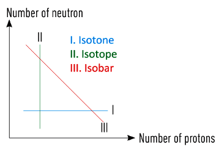
Read nuclide notation and classify: isotopes (same Z) vs isobars (same
A).
3Key Concepts
- 🔢Neutrons n = A − Z; nucleons = p + n.
- 🧪Chemical properties depend mainly on electrons (electronic configuration), not on neutrons.
- 🧩Isotopes: nearly identical chemical behaviour, but different physical properties (mass-related).
- 🔁Isobars have same mass number but different electron counts in neutral atoms → different chemistry.
- 📌Element identity is fixed by Z (periodic table is ordered by Z).
4HOW TO READ AZX
- Element symbol X is decided by Z (number of protons).
- For a neutral atom: electrons = Z; for ions, electrons change but Z stays same.
- Neutron count: n = A − Z; isotopes differ only in n.
- Nucleons = protons + neutrons = A (used in nuclear context).
5EXAMPLES THAT EXAMS LOVE
- Hydrogen isotopes: 11H (protium), 21H (D), 31H (T).
- 146C and 147N are isobars: same A=14, different Z.
- 126C, 136C, 146C are isotopes: same Z=6, different A.
- Isotopes: same electronic configuration → same valency and bonding pattern (chemistry nearly identical).
6ISOTOPES vs ISOBARS
| Basis | Isotopes | Isobars |
|---|---|---|
| Atomic number Z | Same | Different |
| Mass number A | Different | Same |
| What changes? | Neutrons (n) change; Z stays same | Both Z and n change, but A remains constant |
| Element identity | Same element | Different elements |
| Chemical behaviour | Nearly same (same electrons in neutral atoms) | Different (different electrons) |
| Example | 11H, 21H, 31H | 146C and 147N |
7Solved Q&A
1
Classify the pair 146C and 147N as
isotopes or isobars. Also comment on chemical behaviour.
Answer:
Compare A: both have A = 14 → same mass number.
Compare Z: 6 vs 7 → different atomic number (different elements).
Same A but different Z → they are isobars.
Different Z means different electron count in neutral atoms → different electronic configuration → different chemistry.
Compare A: both have A = 14 → same mass number.
Compare Z: 6 vs 7 → different atomic number (different elements).
Same A but different Z → they are isobars.
Different Z means different electron count in neutral atoms → different electronic configuration → different chemistry.
✓ Isobars; chemical properties are different because Z (hence
electrons in neutral atoms) differ.
2
Why do 11H, 21H and
31H show almost identical chemical properties, but different physical
properties?
Answer:
All three have the same Z = 1 → same number of protons and (as neutral atoms) same number of electrons.
Same electrons → same electronic configuration and valency → nearly identical chemical behaviour.
They have different A (1, 2, 3) → different masses and neutron counts.
Mass differences change physical properties (e.g., density, rate of diffusion/effusion), so physical properties differ.
All three have the same Z = 1 → same number of protons and (as neutral atoms) same number of electrons.
Same electrons → same electronic configuration and valency → nearly identical chemical behaviour.
They have different A (1, 2, 3) → different masses and neutron counts.
Mass differences change physical properties (e.g., density, rate of diffusion/effusion), so physical properties differ.
✓ Same Z gives same electrons → nearly same chemistry; different
A gives different mass → different physical properties.
8⭐Important Points
- Z fixes the element; changing neutrons does not change the element name/symbol.
- In a neutral atom: electrons = Z; chemistry depends mainly on these electrons.
- A counts nucleons; A is not the atomic mass (atomic mass is weighted average in u).
- Isotopes: same Z, different A → nearly same chemistry, different mass-dependent physical properties.
- Isobars: same A, different Z → different chemistry because electron number differs.
9❌Common Mistakes
- Confusing A (mass number) with atomic mass (average mass in u).
- Saying isobars have same Z (wrong); isobars have same A.
- Forgetting neutrons = A − Z and writing incorrect neutron count.
- Assuming isotopes have completely different chemical properties; they are nearly identical chemically.
10💡Memory Technique
“Memory hook: Iso = same; the ending tells what is same”
RUTHERFORD MODEL DRAWBACKS
1Definition & Introduction
- Rutherford model fails because classical EM theory predicts orbiting electrons must radiate energy and collapse into the nucleus.
- An electron in a circular orbit is an accelerating charge (centripetal acceleration), so it should emit EM radiation continuously.
- Continuous radiation implies continuous energy loss → orbit radius decreases → electron spirals into nucleus.
- Predicted collapse time is extremely small (order of 10−8 s), contradicting stable atoms.
- Model gives no rule for allowed electron energies or their distribution around the nucleus.
- Hence it cannot explain line spectra (discrete wavelengths); it would predict a continuous spectrum.
2 Diagram
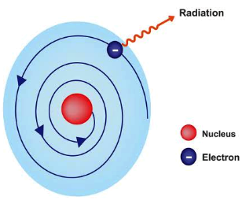
Orbiting electron (accelerating charge) radiates → loses energy → spiral trajectory → collapse.
3Key Concepts
- 📡Maxwell EM theory: accelerating charge radiates → orbiting electron must emit energy
- 🌀Energy loss reduces orbital radius → electron spirals into nucleus (atomic instability)
- ⏱️Classical prediction: atom should collapse in ~10−8 s, but atoms persist indefinitely
- 🎯No electron energy distribution: no shells/levels → cannot predict electronic arrangement
- 🌈Atomic spectra are discrete lines; Rutherford gives no mechanism for discrete emission/absorption
- 🪐Solar-system analogy breaks: planets don’t radiate gravitationally like charges radiate electromagnetically
41) ATOMIC STABILITY FAILS (CLASSICAL EM ARGUMENT)
- In circular motion, electron has centripetal acceleration even at constant speed.
- Maxwell: any accelerating charge emits EM waves → energy carried away from the electron.
- Loss of electron’s mechanical energy reduces orbit radius continuously (no stable orbit).
- Electron should hit nucleus quickly (order 10−8 s) → atoms should not exist stably.
2 Diagram
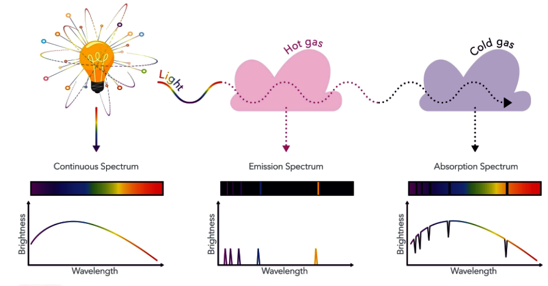
- Model does not specify allowed electron energies, radii, or arrangement around nucleus.
- Continuous energy loss would emit radiation of continuously changing frequency.
- Hence it predicts a continuous spectrum, but experiments show discrete line spectra.
- No rule for absorption/emission during transitions; cannot explain element-specific ‘fingerprints’.
6Rutherford Model: Prediction vs Experimental Reality
| Basis | Rutherford (classical orbit) | What is observed |
|---|---|---|
| Electron motion | Revolves like planet around sun | Electron arrangement needs quantised states (not classical paths) |
| Stability of atom | Accelerating electron radiates → loses energy | Atoms are stable; electrons do not collapse into nucleus |
| Time scale | Collapse predicted in ~10−8 s | Matter exists with long-lived atoms |
| Energy distribution | No specification of allowed energies/radii | Fixed, discrete energy levels required to match data |
| Atomic spectra | Would give continuous spectrum (frequency changes continuously) | Discrete line spectra (element-specific wavelengths) |
| Solar system analogy | Useful for geometry (nucleus central) | Fails physically: charged particles radiate; planets don’t (EM) |
7Solved Q&A
1
Why does Rutherford’s model predict that atoms should be unstable?
Answer:
Electron in a circular orbit has centripetal acceleration (direction changes continuously).
By Maxwell’s electromagnetic theory, an accelerating charge radiates energy continuously.
Radiation causes the electron’s energy to decrease, so orbit radius decreases.
Therefore electron should follow a spiral path and finally fall into the nucleus.
Electron in a circular orbit has centripetal acceleration (direction changes continuously).
By Maxwell’s electromagnetic theory, an accelerating charge radiates energy continuously.
Radiation causes the electron’s energy to decrease, so orbit radius decreases.
Therefore electron should follow a spiral path and finally fall into the nucleus.
✓ Because an orbiting electron is an accelerating charge, it should radiate
energy and spiral into the nucleus, making atoms unstable.
2
Rutherford model resembles the solar system. Yet it fails to explain atomic spectra.
Give the reason.
Answer:
In Rutherford model, electron can have any orbit radius and energy (no restriction).
As it radiates continuously, its energy changes continuously, so emitted frequency would also vary continuously.
This would produce a continuous spectrum.
But real atoms show discrete line spectra, implying electrons have discrete (quantised) energies and transitions.
In Rutherford model, electron can have any orbit radius and energy (no restriction).
As it radiates continuously, its energy changes continuously, so emitted frequency would also vary continuously.
This would produce a continuous spectrum.
But real atoms show discrete line spectra, implying electrons have discrete (quantised) energies and transitions.
✓ Rutherford has no quantised energy levels; it predicts continuous radiation,
so it cannot produce discrete line spectra.
8⭐Important Points
- Key idea: accelerating electron radiates (Maxwell) → classical orbits cannot be stationary.
- Predicted collapse in ~10−8 s is a standard fact used in MCQs/Assertion–Reason.
- Rutherford explains nucleus and empty space, but fails for stability and spectra.
- Absence of electron energy distribution means it cannot justify periodicity or electronic configuration.
- Continuous spectrum prediction vs observed line spectrum is the core contradiction.
9❌Common Mistakes
- Saying electron radiates because it is moving; correct: radiates because it is accelerating.
- Mixing up Rutherford drawback with Thomson drawback (α-scattering failure belongs to Thomson).
- Claiming Rutherford explains spectra partially; it does not explain discrete lines at all.
- Forgetting the collapse-time order (10−8 s) in one-mark questions.
10💡Memory Technique
“Mnemonic: RUTH breaks on R-S-E”
EM RADIATION AND QUANTA
1Definition & Introduction
- Electromagnetic (EM) radiation is energy propagated as oscillating electric and magnetic fields.
- Maxwell’s theory: an accelerating charge produces EM waves; no medium required; speed in vacuum c = 3.0×108 m s−1.
- In an EM wave, E-field and B-field are mutually perpendicular and both perpendicular to propagation direction.
- Wave description uses wavelength λ and frequency ν, related by c = νλ.
- Planck’s quantum theory: matter exchanges energy in discrete packets (quanta) with E = hν.
2 Diagram
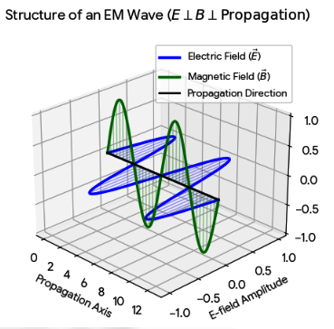
Oscillating E and B fields (wave nature) + spectrum runs from low
ν to high ν.
3Key Concepts
- 🌊Wave parameters: higher ν ⇒ shorter λ (since c is constant in vacuum).
- 🧲E and B oscillate in phase; both ⟂ to direction of travel (transverse wave).
- 🌈Visible region: 400–750 nm (violet → red as λ increases).
- 📏Wavenumber ṽ = 1/λ; common unit cm−1 (spectroscopy). Use λ in cm if ṽ is in cm−1.
- 🧩Quantisation (Planck): energy exchanged with radiation occurs in multiples Etotal = nhν, where n = 0, 1, 2, 3...
4ELECTROMAGNETIC SPECTRUM SNAPSHOT
- Order (increasing ν): radio < microwave < infrared < visible < ultraviolet < X-ray < γ-ray.
- Visible range: 400–750 nm; violet has higher ν than red.
- In vacuum, all EM radiations travel with the same c; only ν and λ differ.
5PLANCK’S QUANTUM IDEA (WHY ‘QUANTA’?)
- Classical wave model predicts continuous energy exchange; black-body radiation demanded discreteness.
- Energy per quantum (photon): E = hν; higher frequency photons carry more energy.
- Total energy exchanged: Etotal = nhν, where n is an integer (0, 1, 2...).
6MAXWELL WAVE MODEL vs PLANCK QUANTUM MODEL
| Basis | Maxwell (Wave nature) | Planck (Particle/Quanta) |
|---|---|---|
| What is described? | Propagation of EM radiation as fields | Exchange of energy between matter and radiation |
| Key statement | Oscillating E and B fields travel without medium | Energy emitted/absorbed in discrete packets (quanta/photons) |
| Core relation | c = νλ | E = hν |
| Energy vs frequency | Not inherently quantised in classical wave picture | Directly proportional (E ∝ ν) |
| Typical use in atom chapter | Accelerating charge radiates energy (wave picture), motivating the stability problem | Explains quantised exchange of energy; supports line spectra and Bohr’s postulates |
7Formulas
From wave definition: speed = distance/time; in one time period T, wave
advances one wavelength λ.
c = λT
Since frequency ν = 1/T, substitute:
c = νλ
Wavenumber is defined as reciprocal of wavelength:
ṽ = 1λ
Planck: energy of one quantum (photon) is proportional to frequency:
E = hν
| c = | speed of light in vacuum = 3.0×108 m s−1 |
| ν = | frequency (Hz = s−1) |
| λ = | wavelength (m; often nm in visible region) |
| ṽ = | wavenumber (SI: m−1; common: cm−1) |
| h = | Planck constant = 6.626×10−34 J s |
| E = | energy of one photon/quantum (J) |
Two must-use links (wave + quantum)
c = νλ
E = hν = hcλ
E = hν = hcλ
8Graph
Planck relation gives a straight line: E ∝ ν with slope h.
9Solved Examples
1
A radiation has wavelength 500 nm. Find (i) frequency ν, (ii) energy per
photon E.
Solution:
Convert wavelength: λ = 500 nm = 500×10−9 m = 5.00×10−7 m.
Use c = νλ ⇒ ν = cλ = 3.0×1085.00×10−7 s−1 = 6.0×1014 Hz.
Photon energy: E = hν = (6.626×10−34 J s)(6.0×1014 s−1) = 3.9756×10−19 J ≈ 3.98×10−19 J.
Convert wavelength: λ = 500 nm = 500×10−9 m = 5.00×10−7 m.
Use c = νλ ⇒ ν = cλ = 3.0×1085.00×10−7 s−1 = 6.0×1014 Hz.
Photon energy: E = hν = (6.626×10−34 J s)(6.0×1014 s−1) = 3.9756×10−19 J ≈ 3.98×10−19 J.
✓ ν = 6.0×1014 Hz; E ≈ 3.98×10−19 J per
photon.
2
Radiation has wavenumber ṽ = 2.0×104 cm−1. Find
wavelength and photon energy.
Solution:
Convert wavenumber to SI: since 1 cm = 10−2 m, 1 cm−1 = 102 m−1. Hence ṽ = 2.0×104×100 = 2.0×106 m−1.
Use ṽ = 1/λ ⇒ λ = 1/ṽ = 12.0×106 m = 5.0×10−7 m = 500 nm.
Photon energy: E = hcλ = (6.626×10−34)(3.0×108)5.0×10−7 J.
Compute: numerator = 1.9878×10−25 J m; divide by 5.0×10−7 m ⇒ E = 3.9756×10−19 J ≈ 3.98×10−19 J.
Convert wavenumber to SI: since 1 cm = 10−2 m, 1 cm−1 = 102 m−1. Hence ṽ = 2.0×104×100 = 2.0×106 m−1.
Use ṽ = 1/λ ⇒ λ = 1/ṽ = 12.0×106 m = 5.0×10−7 m = 500 nm.
Photon energy: E = hcλ = (6.626×10−34)(3.0×108)5.0×10−7 J.
Compute: numerator = 1.9878×10−25 J m; divide by 5.0×10−7 m ⇒ E = 3.9756×10−19 J ≈ 3.98×10−19 J.
✓ λ = 500 nm; E ≈ 3.98×10−19 J per photon.
10⭐Important Points
- EM waves in vacuum have fixed speed c; changing ν automatically changes λ.
- Visible light limits are frequently asked: 400 nm (violet) to 750 nm (red).
- Spectroscopy often uses wavenumber in cm−1; always convert units carefully.
- Photon energy increases with frequency: E ∝ ν and E ∝ 1/λ.
- Quantisation means energy exchange occurs in integer multiples nhν, not arbitrary values.
11❌Common Mistakes
- Using c = λ/ν instead of correct c = νλ.
- Forgetting nm → m conversion (1 nm = 10−9 m).
- Mixing wavenumber units: treating cm−1 as m−1 directly (factor 100 error).
- Thinking higher wavelength means higher photon energy (it is the opposite).
12💡Memory Technique
“Two one-liners: “c is constant” + “ν gives energy””
13🧮Formula Sheet
c = νλ, where c = 3.0×108 m
s−1ṽ = 1/λ (if ṽ in cm−1,
take λ in cm; SI uses m−1 and m)E = hν,
h = 6.626×10−34 J sE = hcλVisible
range: 400–750 nmSpectrum order (increasing ν): radio →
microwave → IR → visible → UV → X → γ
PHOTOELECTRIC EFFECT
1Definition & Introduction
- Photoelectric effect: emission of electrons from a metal surface when incident light has ν ≥ ν0.
- Hertz (1887) observed emission; Einstein (1905) explained it using photon (quantum) concept.
- Each emitted electron needs minimum energy work function W0 = hν0.
- For ν < ν0, no emission occurs even at very high intensity.
- Emission is instantaneous (no measurable time lag) once ν ≥ ν0.
2 Diagram
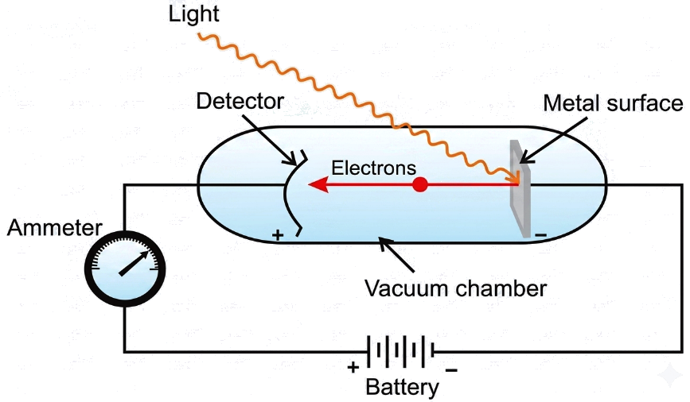
Light of sufficient frequency ejects electrons from a metal; intensity controls how many are emitted.
3Key Concepts
- ⚡Instantaneous emission supports particle-like energy delivery: photon energy hν.
- 🔒Threshold frequency ν0 is metal-specific; it sets the minimum photon energy.
- 📈Number of photoelectrons ∝ intensity (at fixed ν above ν0).
- 🎯Maximum kinetic energy depends on frequency, not intensity: Kmax ↑ as ν ↑.
- 🔋Applications: photocells and photoelectric sensors (light detectors).
4KEY OBSERVATIONS (EXAM FAVOURITES)
- No photoemission below threshold frequency ν0, even if intensity is increased.
- Photoelectrons are emitted instantly when ν ≥ ν0 (supports quantised energy).
- At fixed ν > ν0, photoelectric current (rate of emission) ∝ intensity.
- At fixed intensity, Kmax increases with ν; stopping potential increases accordingly.
- Increasing intensity at fixed ν does not change Kmax; it changes electron count.
5EINSTEIN'S EXPLANATION (PHOTON ENERGY BALANCE)
- One photon transfers energy hν to one electron (single-photon event, typical model).
- Part of energy pays work function W0; the rest appears as maximum kinetic energy.
- Threshold condition: hν0 = W0; for ν just above ν0, Kmax is small.
- If needed: Kmax = eVs links stopping potential to maximum kinetic energy.
6EFFECT OF FREQUENCY vs INTENSITY (AT METAL SURFACE)
| Basis | Increase frequency ν | Increase intensity |
|---|---|---|
| Emission condition | If ν crosses ν0, emission starts | Cannot start emission if ν < ν0 |
| Maximum KE | Kmax increases linearly with ν | Kmax unchanged (for fixed ν) |
| Number of electrons | May change, but frequency mainly controls Kmax | Increases; photoelectric current ∝ intensity |
| Stopping potential | Vs increases | Vs unchanged (for fixed ν) |
7Formulas
Photon energy incident on electron:
Ephoton = hν
Minimum energy to liberate electron (work function):
W0 = hν0
Energy conservation (Einstein photoelectric equation):
Kmax = hν − W0 =
h(ν − ν0)
Write maximum KE in particle form:
12mev2max
= hν − hν0
If stopping potential is used:
Kmax = eVs
| h = | Planck constant (6.626 × 10−34 J s) |
| ν = | frequency of incident radiation (Hz) |
| ν0 = | threshold frequency for the metal (Hz) |
| W0 = | work function = minimum energy needed to eject electron (J or eV) |
| Kmax = | maximum kinetic energy of emitted photoelectron (J) |
| me = | electron mass (9.11 × 10−31 kg) |
| Vs = | stopping potential (V) |
| e = | magnitude of electron charge (1.602 × 10−19 C) |
Most important result
Kmax = hν − hν0 = h(ν −
ν0)
8Graph
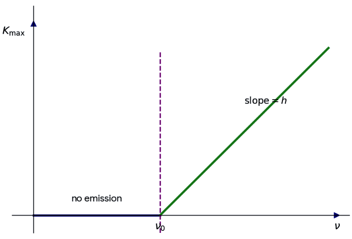
Graph of Kmax vs frequency: straight line with slope h,
intercept at ν = ν0.
9Solved Examples
1
A metal has threshold frequency ν0 = 5.0 × 1014 Hz. Light of
ν = 8.0 × 1014 Hz falls on it. Find Kmax and stopping potential
Vs. Use h = 6.626 × 10−34 J s, e = 1.602 ×
10−19 C.
Solution:
Kmax = h(ν − ν0) = 6.626 × 10−34 × (8.0 − 5.0) × 1014 J
Δν = 3.0 × 1014 Hz ⇒ Kmax = 6.626 × 3.0 × 10−20 J = 1.9878 × 10−19 J
Vs = Kmaxe = 1.9878 × 10−191.602 × 10−19 V ≈ 1.24 V
Kmax = h(ν − ν0) = 6.626 × 10−34 × (8.0 − 5.0) × 1014 J
Δν = 3.0 × 1014 Hz ⇒ Kmax = 6.626 × 3.0 × 10−20 J = 1.9878 × 10−19 J
Vs = Kmaxe = 1.9878 × 10−191.602 × 10−19 V ≈ 1.24 V
✓ Kmax = 1.99 × 10−19 J; Vs ≈
1.24 V
2
A metal has work function W0 = 2.0 eV. Incident light has ν =
1.0 × 1015 Hz. Calculate Kmax in eV and the maximum speed
vmax. Use h = 6.626 × 10−34 J s, 1 eV = 1.602 ×
10−19 J, me = 9.11 × 10−31 kg.
Solution:
Photon energy hν = 6.626 × 10−34 × 1.0 × 1015 J = 6.626 × 10−19 J
Convert to eV: 6.626 × 10−191.602 × 10−19 eV = 4.136 eV (approx.)
Kmax = 4.136 − 2.0 = 2.136 eV
In joule: Kmax = 2.136 × 1.602 × 10−19 J = 3.422 × 10−19 J
Use 12mev2max = Kmax ⇒ vmax = √(2Kmaxme)
vmax = √(2 × 3.422 × 10−199.11 × 10−31) m s−1 = √(7.51 × 1011) ≈ 8.67 × 105 m s−1
Photon energy hν = 6.626 × 10−34 × 1.0 × 1015 J = 6.626 × 10−19 J
Convert to eV: 6.626 × 10−191.602 × 10−19 eV = 4.136 eV (approx.)
Kmax = 4.136 − 2.0 = 2.136 eV
In joule: Kmax = 2.136 × 1.602 × 10−19 J = 3.422 × 10−19 J
Use 12mev2max = Kmax ⇒ vmax = √(2Kmaxme)
vmax = √(2 × 3.422 × 10−199.11 × 10−31) m s−1 = √(7.51 × 1011) ≈ 8.67 × 105 m s−1
✓ Kmax ≈ 2.14 eV; vmax ≈ 8.7 ×
105 m s−1
10⭐Important Points
- Threshold frequency ν0 is a property of the metal; equivalently threshold wavelength λ0.
- Einstein equation predicts linear Kmax–ν relation with slope h (used to estimate h).
- Intensity affects photoelectric current (number per second), not Kmax.
- No time lag: emission begins as soon as light shines, provided ν ≥ ν0.
- W0 can be stated in eV; remember 1 eV = 1.602 × 10−19 J.
11❌Common Mistakes
- Assuming higher intensity can eject electrons even when ν < ν0.
- Saying kinetic energy increases with intensity; actually it increases with frequency.
- Using total kinetic energy instead of maximum kinetic energy in Einstein equation.
- Forgetting to convert eV to joule before using 12mv2 calculations.
12💡Memory Technique
“FIK: Frequency–Intensity–Kick”
13🧮Formula Sheet
Ephoton = hνW0 = hν0Kmax
= hν − W0 = h(ν − ν0)12mev2max
= hν − hν0Kmax =
eVsFor ν ≥ ν0: photoelectric current ∝
intensity
HYDROGEN LINE SPECTRUM
1Definition & Introduction
- Hydrogen line spectrum is a set of discrete wavelengths emitted/absorbed when an electron jumps between fixed energy levels in H.
- Emission spectrum: excited H atom emits photons; bright lines on a dark background.
- Absorption spectrum: H in ground/low state absorbs specific wavelengths from continuous light; dark lines on a bright background.
- Each line corresponds to a transition between two integers n2 (higher level) and n1 (lower level).
- Wavenumber ṽ (cm−1) is commonly used: ṽ = 1/λ (with λ in cm).
2Diagram
Emission gives bright lines; absorption gives dark lines at identical wavelengths;
series are set by final n1.
3Key Concepts
- NoneDiscrete lines show that electronic energies in atoms are quantised, not continuous.
- NoneEmission has bright lines and absorption has dark lines at the same wavelengths.
- NoneFor hydrogen: RH = 109,677 cm−1 (= 1.09677×105 cm−1).
- NoneSeries are identified by the final level n1: Lyman(1), Balmer(2), Paschen(3), Brackett(4), Pfund(5).
- NoneFor fixed n1, as n2 → ∞ lines crowd to a series limit; within that series, the smallest jump gives the longest λ.
4RYDBERG FORMULA & SERIES LIMITS
- General: ṽ = RH[1/n12 − 1/n22], with n2 > n1.
- For a given series, n1 fixed; varying n2 gives multiple lines that converge.
- Series limit (n2 → ∞): ṽlimit = RH/n12, so λlimit = n12/RH (use consistent units).
- Within a fixed series, the smallest possible jump (e.g., 3→2 in Balmer) gives the longest λ in that series.
5SIGN + UNITS QUICK CHECK (EXAM-FRIENDLY)
- Emission: ni > nf; photon released; ṽ from Rydberg is taken as a positive magnitude.
- Absorption: nf > ni; photon absorbed; same Rydberg form with the higher level as n2.
- If ṽ is in cm−1, then λ(cm) = 1/ṽ; conversion: 1 nm = 10−7 cm.
- Visible region approx 400–750 nm; for H, only Balmer lines lie in this range.
6Hydrogen Spectral Series (Rydberg: fixed final level n1)
| Series | n1 (final) | n2 (initial) | Region |
|---|---|---|---|
| Lyman | 1 | 2,3,4,... | Ultraviolet |
| Balmer | 2 | 3,4,5,... | Visible |
| Paschen | 3 | 4,5,6,... | Infrared |
| Brackett | 4 | 5,6,7,... | Infrared |
| Pfund | 5 | 6,7,8,... | Infrared |
7Formulas
Photon relations (spectroscopy form):
ṽ = 1λ, ν = cṽ,
E = hν = hcṽ
For H atom transitions between integers n2 and
n1:
ṽ = RH[1n12 − 1n22],
n2 > n1
| ṽ = | Wavenumber (cm−1 or m−1) |
| λ = | Wavelength (cm or m; keep units consistent with ṽ) |
| ν = | Frequency (Hz) |
| c = | Speed of light in vacuum (3.00×108 m s−1) |
| h = | Planck constant (6.626×10−34 J s) |
| RH = | Rydberg constant for hydrogen = 109,677 cm−1 |
| n1, n2 = | Final and initial principal quantum numbers (integers), with n2 > n1 |
Rydberg (most used in problems)
ṽ = RH[1n12 − 1n22]
8Graph
Within a fixed series (fixed n1), lines converge as n2 increases.
9Solved Examples
1
Find wavelength of H emission line for transition n2=3 to
n1=2 (Balmer Hα). Use RH=109,677 cm−1.
Solution:
Use ṽ = RH[1/22 − 1/32] = 109,677[14 − 19] cm−1
Bracket: 14 − 19 = 9−436 = 536
ṽ = 109,677 × 536 = 15,233 cm−1 (15,232.916... cm−1)
λ (cm) = 1/ṽ = 115232.916... = 6.564×10−5 cm
Convert to nm: 1 cm = 107 nm ⇒ λ = 6.564×10−5 × 107 = 656.4 nm
Use ṽ = RH[1/22 − 1/32] = 109,677[14 − 19] cm−1
Bracket: 14 − 19 = 9−436 = 536
ṽ = 109,677 × 536 = 15,233 cm−1 (15,232.916... cm−1)
λ (cm) = 1/ṽ = 115232.916... = 6.564×10−5 cm
Convert to nm: 1 cm = 107 nm ⇒ λ = 6.564×10−5 × 107 = 656.4 nm
✓ λ ≈ 656.4 nm (Balmer Hα, visible red).
2
Calculate wavenumber and wavelength of the Lyman-α line (transition
n2=2 to n1=1). Use RH=109,677
cm−1.
Solution:
ṽ = RH[1/12 − 1/22] = 109,677[1 − 14] cm−1
Bracket: 1 − 14 = 34
ṽ = 109,677 × 34 = 82,257.75 cm−1
λ(cm) = 1/ṽ = 182257.75 = 1.2156×10−5 cm
To nm: λ = 1.2156×10−5 × 107 = 121.56 nm
ṽ = RH[1/12 − 1/22] = 109,677[1 − 14] cm−1
Bracket: 1 − 14 = 34
ṽ = 109,677 × 34 = 82,257.75 cm−1
λ(cm) = 1/ṽ = 182257.75 = 1.2156×10−5 cm
To nm: λ = 1.2156×10−5 × 107 = 121.56 nm
✓ ṽ ≈ 82,258 cm−1, λ ≈ 121.6 nm (UV).
10⭐Important Points
- Use wavenumber form directly with RH in cm−1; then convert λ carefully.
- For hydrogen, allowed transitions give discrete lines; continuous spectra typically come from hot solids/liquids or dense gases.
- Only Balmer series lies in visible; Lyman is UV; Paschen/Brackett/Pfund are IR.
- Lines converge because energy gaps shrink at higher n; series limit corresponds to ionisation from that level.
- Emission and absorption line positions match; difference is bright vs dark background.
11❌Common Mistakes
- Using n1 and n2 reversed in Rydberg formula (use n2 > n1 so bracket is positive).
- Mixing units: taking λ in m while RH is in cm−1 without conversion.
- Assuming Lyman is visible because it is the first series; actually it is UV.
- Forgetting inverse relation: larger ṽ means smaller λ.
12💡Memory Technique
“Series order + region hook”
13🧮Formula Sheet
ṽ = 1/λ (if λ in cm, then ṽ in
cm−1)ṽ =
RH[1/n12 − 1/n22],
n2 > n1RH = 109,677
cm−1 (= 1.09677×107 m−1)E =
hcṽ and ν = cṽSeries:
Lyman(n1=1, UV), Balmer(2, visible), Paschen(3, IR), Brackett(4, IR), Pfund(5,
IR)Series limit: ṽlimit =
RH/n12, so λlimit =
n12/RH (units consistent)
BOHR MODEL (HYDROGEN & H-LIKE SPECIES)
1Definition & Introduction
- Bohr model (1913): electrons move in certain allowed circular stationary states without radiating energy.
- Only those orbits are allowed for which angular momentum is quantised: mevr = nh2π.
- Radiation is emitted/absorbed only when an electron jumps between two stationary states.
- Transition energy follows Planck: ΔE = hν; emission: nf < ni, absorption: nf > ni.
- Quantitatively valid mainly for one-electron (hydrogen-like) species: H, He+, Li2+, Be3+.
2 Diagram
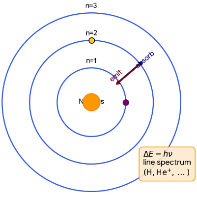
Quantised circular orbits (n=1,2,3...) and radiation only during jumps:
emission/absorption lines.
3Key Concepts
- 🛰️Stationary state: fixed r and E; no radiation while in the orbit.
- 🧮Size scales as rn ∝ n2Z; higher Z shrinks the orbit.
- 🔻Energy: En ∝ −Z2n2; more negative means more tightly bound.
- 🌈Spectral line corresponds to a specific transition; many transitions form series (Lyman, Balmer, etc.).
- ⚠️Limitations: cannot explain fine structure, Zeeman/Stark splitting, or multi-electron atoms.
4BOHR POSTULATES (WHAT TO WRITE IN EXAMS)
- Postulate 1: electrons revolve in certain permitted circular orbits (stationary states).
- Postulate 2: no energy loss in a stationary state; atom is stable despite electron motion.
- Postulate 3: allowed orbits satisfy mevr = nh2π, n = 1,2,3...
- Postulate 4: radiation occurs only on transition; photon energy equals level gap: ΔE = hν.
5SPECTRAL LINES FROM TRANSITIONS
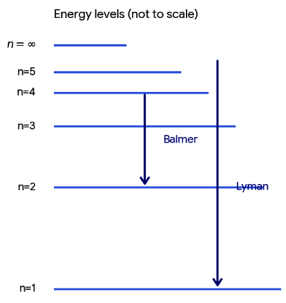
- For H-like species: ΔE = 2.18×10−18 Z2(1ni2 − 1nf2) J.
- Emission: ni > nf gives photon; absorption: nf > ni consumes photon.
- Series: fixed nf gives a set of lines (Lyman nf=1 UV; Balmer nf=2 visible).
- As n increases, levels get closer; convergence at n → ∞ corresponds to ionisation limit.
6RUTHERFORD vs BOHR (WHY BOHR WAS NEEDED)
| Basis | Rutherford model | Bohr model |
|---|---|---|
| Electron motion | Any classical orbit around nucleus | Only certain quantised circular orbits |
| Radiation in orbit | Accelerating e⁻ should radiate continuously (collapse problem) | No radiation in stationary states (stability) |
| Atomic spectrum | Cannot explain line spectrum | Explains H and H-like line spectra via transitions |
| Applicability | General picture of nucleus + e⁻ | Accurate mainly for one-electron species |
7Formulas
Electrostatic attraction provides centripetal force (H-like, nuclear charge =
+Ze)
mev2r =
14πϵ0Ze2r2
Quantisation of angular momentum (Bohr postulate)
mevr = nh2π
Eliminate v to get orbit radius
rn = n2a0Z,
a0 = 52.9 pm
Total energy (K + U) for the allowed orbit (energy of one electron in that orbit)
En = −2.18×10−18Z2n2 J
Spectral line from a jump between two levels
ΔE = Ef − Ei =
hν
| me = | mass of electron (kg) |
| v = | electron speed in orbit (m s−1) |
| r, rn = | orbital radius; nth-orbit radius (m or pm) |
| n = | principal quantum number (1,2,3,...) |
| Z = | atomic number; nuclear charge = +Ze |
| a0 = | Bohr radius (first orbit radius of H) = 52.9 pm |
| En = | energy of electron in nth orbit (J) |
| ϵ0 = | permittivity of vacuum |
Most important results for H-like species
rn = n2a0Z,
En = −2.18×10−18Z2n2 J,
ΔE = hν
8Graph
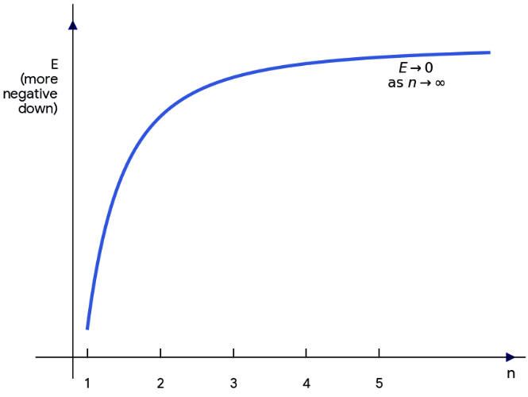
For fixed Z, En increases towards 0 as n increases
(levels crowd near ionisation).
9Solved Examples
1
Find radius and energy of the second orbit (n=2) of
He+ (hydrogen-like, Z=2). Use a0=52.9 pm and
En=−2.18×10−18(Z2/n2) J.
Solution:
Radius: rn = n2a0Z = 22×52.9 pm2.
Compute: 22=4, so r2 = 4×52.92 pm = 2×52.9 pm = 105.8 pm.
Energy: E2 = −2.18×10−18×2222 J = −2.18×10−18 J.
Radius: rn = n2a0Z = 22×52.9 pm2.
Compute: 22=4, so r2 = 4×52.92 pm = 2×52.9 pm = 105.8 pm.
Energy: E2 = −2.18×10−18×2222 J = −2.18×10−18 J.
✓ r2 = 105.8 pm; E2 =
−2.18×10−18 J.
2
For hydrogen, calculate photon frequency ν for the Balmer transition
ni=3 → nf=2. Use ΔE =
2.18×10−18(1/nf2 − 1/ni2) J
and h=6.626×10−34 J s.
Solution:
Energy gap magnitude for emission: |ΔE| = 2.18×10−18(122 − 132) J.
Compute bracket: 14 − 19 = 9−436 = 536 ≈ 0.1388889.
|ΔE| = 2.18×10−18×0.1388889 ≈ 3.0278×10−19 J.
ν = |ΔE|h = 3.0278×10−196.626×10−34 s−1 ≈ (0.4569)×1015 s−1.
So ν ≈ 4.57×1014 Hz.
Energy gap magnitude for emission: |ΔE| = 2.18×10−18(122 − 132) J.
Compute bracket: 14 − 19 = 9−436 = 536 ≈ 0.1388889.
|ΔE| = 2.18×10−18×0.1388889 ≈ 3.0278×10−19 J.
ν = |ΔE|h = 3.0278×10−196.626×10−34 s−1 ≈ (0.4569)×1015 s−1.
So ν ≈ 4.57×1014 Hz.
✓ ν ≈ 4.57×1014 Hz for H (3 → 2, Balmer emission).
10⭐Important Points
- Bohr equations work for one-electron systems only: energy and radius depend on Z and n.
- a0 = 52.9 pm is radius of H in n=1; for He+ ground orbit radius becomes 26.45 pm.
- Bound-state energy is negative; by convention take E=0 at n=∞ (free electron reference).
- As Z increases, rn decreases and |En| increases: tighter binding, larger spectral gaps.
- Line spectrum arises because only specific ΔE are allowed; hence only specific ν/λ appear.
11❌Common Mistakes
- Using rn=n2a0 for He+/Li2+ and forgetting division by Z.
- For transitions, swapping initial/final levels and getting wrong sign for emission vs absorption.
- Taking energy magnitude but calling it positive; bound-state En must be negative.
- Applying Bohr model to neutral He or other multi-electron atoms and expecting correct spectra.
12💡Memory Technique
“Z shrinks Radius, Z deepens Energy”
13🧮Formula Sheet
Angular momentum quantisation:
mevr = nh2πBohr
radius: a0 = 52.9 pmOrbit radius (H-like):
rn = n2a0ZEnergy level (H-like): En = −2.18×10−18Z2n2 JTransition: ΔE = Ef − Ei =
hνTransition energy (H-like): ΔE =
2.18×10−18Z2(1ni2 − 1nf2) JLimitations keywords: fine structure; Zeeman (magnetic splitting);
Stark (electric splitting); fails for multi-electron atoms.
QUANTUM MECHANICAL ATOM
1Definition & Introduction
- Quantum mechanical model describes electrons by a wave function ψ, not fixed paths, giving orbitals.
- Electron shows matter-wave nature: de Broglie wavelength λ = hp.
- Due to uncertainty, electron cannot have simultaneously exact position and momentum: ΔxΔp ≥ h4π.
- Schrödinger equation gives quantised energies and orbitals; measurable quantity is probability density |ψ|2 (for a normalised ψ).
- Each orbital holds max 2 electrons with opposite spins (Pauli); filling governed by Aufbau + Hund.
2Diagram
Quantum model links matter waves + uncertainty to orbitals (|ψ|²) and quantum
numbers.
3Key Concepts
- 🌊de Broglie: λ decreases as momentum p increases; electron diffraction confirms waves.
- 🎯Uncertainty kills Bohr orbits: only probability of finding electron in space is meaningful.
- 🧩Orbital = 3D region where probability of finding electron is high (~90%); orbit = 2D path (invalid in QM).
- 🔢Quantum numbers: n (size/energy), l (shape), ml (orientation), ms (spin).
- 🌀Shapes: s spherical; p dumbbell (px, py, pz); d mostly cloverleaf; nodes where |ψ|2=0.
- 📈Multi-electron energies follow (n+l) rule; stability of half/fully filled subshells gives Cr, Cu exceptions.
4QUANTUM NUMBERS & COUNTING (EXAM FAVOURITES)
- Allowed values: n=1,2,3…; l=0 to (n−1); ml=−l…0…+l; ms=±12.
- Subshell names: l=0,1,2,3 ⇒ s,p,d,f; orbitals per subshell = (2l+1).
- Capacities: max e− in subshell = 2(2l+1); in shell = 2n2; orbitals in shell = n2.
- Nodes: radial = n−l−1; angular = l; total = n−1.
5ENERGY ORDER & ELECTRON FILLING (AUFBAU–PAULI–HUND)
- Hydrogen-like: energy depends only on n (2s and 2p are degenerate).
- Multi-electron: energy depends on n and l; within same n: s < p < d < f.
- (n+l) rule: lower (n+l) fills first; tie → lower n fills first (4s before 3d).
- Pauli: no two electrons have same (n,l,ml,ms); orbital holds 2 with opposite spins.
- Hund: degenerate orbitals fill singly with parallel spins before pairing.
6ORBIT (BOHR) vs ORBITAL (QUANTUM MECHANICAL)
| Basis | Orbit | Orbital |
|---|---|---|
| Meaning | Fixed path of electron | Region described by ψ |
| Dimensionality | 2-D circular/elliptical path | 3-D probability cloud |
| Key idea | Definite position & velocity | Only probability |ψ|2 |
| Experimental status | Not physically meaningful with uncertainty | Physically meaningful; predicts spectra/structure |
| Electron capacity | Not defined | Max 2 (opposite spins) |
7Formulas
Matter waves: de Broglie relation for a particle.
p = hλ ⇒ λ = hp = hmv
Uncertainty: position–momentum limit (minimum product case).
Δx·Δp ≥ h4π = ħ2
Born interpretation (for normalised ψ).
Probability density = |ψ|2
| λ = | de Broglie wavelength (m) |
| h = | Planck constant = 6.626×10−34 J s |
| p = | momentum = mv (kg m s−1) |
| Δx = | uncertainty in position (m) |
| Δp = | uncertainty in momentum (kg m s−1) |
| ħ = | h/2π (J s) |
| ψ = | wave function; |ψ|2 gives probability density (for normalised ψ) |
Two must-know results
λ = hmv
and ΔxΔp ≥ h4π
8Graph
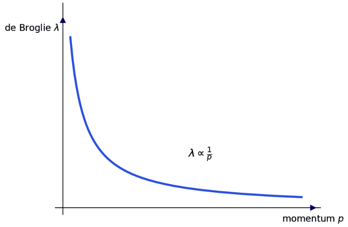
Qualitative trend: as momentum increases, de Broglie wavelength decreases (inverse
relation).
9Solved Examples
1
Find de Broglie wavelength of an electron moving with speed 2.20×106 m
s−1. Use h=6.626×10−34 J s,
me=9.109×10−31 kg.
Solution:
Use λ = hmv.
mv = (9.109×10−31)(2.20×106) = 2.004×10−24 kg m s−1.
λ = 6.626×10−342.004×10−24 m = 3.306×10−10 m.
Use λ = hmv.
mv = (9.109×10−31)(2.20×106) = 2.004×10−24 kg m s−1.
λ = 6.626×10−342.004×10−24 m = 3.306×10−10 m.
✓ λ ≈ 3.31×10−10 m (≈ 0.331 nm).
2
If electron position is located within Δx = 1.0×10−10 m, find
minimum uncertainty in velocity Δv. Use ΔxΔp ≥ h4π, and Δp = mΔv for
electron mass 9.109×10−31 kg.
Solution:
Δpmin = h4πΔx.
4πΔx = 4π(1.0×10−10) = 1.2566×10−9.
Δpmin = 6.626×10−341.2566×10−9 = 5.27×10−25 kg m s−1.
Δvmin = Δpminm = 5.27×10−259.109×10−31 = 5.79×105 m s−1.
Δpmin = h4πΔx.
4πΔx = 4π(1.0×10−10) = 1.2566×10−9.
Δpmin = 6.626×10−341.2566×10−9 = 5.27×10−25 kg m s−1.
Δvmin = Δpminm = 5.27×10−259.109×10−31 = 5.79×105 m s−1.
✓ Minimum velocity uncertainty Δv ≈ 5.8×105 m
s−1.
10⭐Important Points
- Electron diffraction supports wave nature; de Broglie relation is central to modern atom.
- Uncertainty principle invalidates precise electron trajectories; replaces orbits with orbitals.
- Quantum numbers: choose in the order n → l → ml; then spin ms = ±1/2.
- Node formulas: radial (n−l−1) and angular (l) are frequent MCQs (total nodes = n−1).
- Energy ordering: H-like depends only on n; multi-electron depends on n and l with s<p<d<f.
11❌Common Mistakes
- Using de Broglie λ=h/mv with wrong units (taking h in eV s without conversion).
- Treating ΔxΔp = h/4π as exact equality in all cases; it is an inequality (minimum case only).
- Mixing nodes: writing radial nodes = l and angular nodes = n−l−1 (reversed).
- Applying hydrogen degeneracy (2s=2p) to multi-electron atoms; in them 2s is lower than 2p.
12💡Memory Technique
“Quantum numbers: "N–L–M–S" ladder + node hook”
13🧮Formula Sheet
λ = hmv = hp.Δx·Δp ≥ h4π (=
ħ2); with Δp=mΔv.For a normalised wave function ψ, probability density = |ψ|2; an
orbital is a region of high probability, not a path.Allowed values:
l=0…(n−1); ml=−l…+l;
ms=±1/2.Orbitals per subshell = 2l+1; electrons per
subshell = 2(2l+1); per shell = 2n2.Nodes: radial =
n−l−1; angular = l; total = n−1.Energy/filling:
(n+l) low first; tie → lower n first; Hund then Pauli.Exceptions: Cr [Ar] 3d54s1; Cu [Ar]
3d104s1.